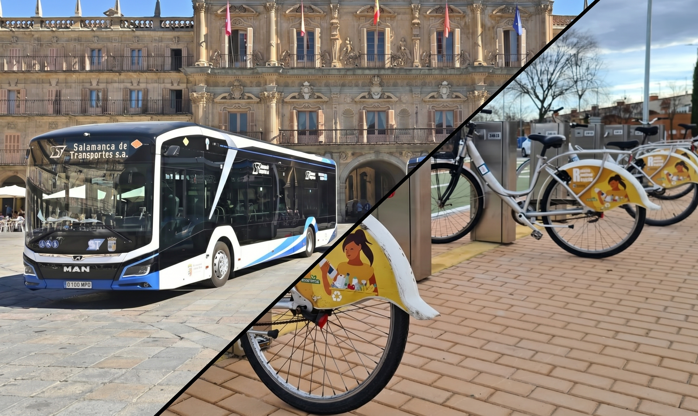

Bus Urbano vs SALENBICI en Salamanca: ¿Qué compensa más?

Aunque Salamanca cuenta con distancias relativamente cortas, hay un detalle importante: no es una ciudad llana. Hay cuestas considerables y se requiere ser medianamente hábil para evitarlas o afrontarlas de la mejor manera. Aún así, esto la convierte en el escenario perfecto para un debate clásico entre los estudiantes y residentes: ¿Comprar el bono del autobús urbano o apostar por el servicio municipal de bicicletas SALENBICI? A continuación, analizamos los precios actualizados, la flexibilidad y los trucos para combinar ambas opciones de transporte urbano.
1. El Autobús Urbano (Salamanca de Transportes)
La red de autobuses de Salamanca conecta todos los barrios con el centro y los campus universitarios. El billete ordinario a bordo tiene un precio de 1,20 €. Sin embargo, existen opciones mucho más rentables:
- Tarjeta bus-ciudad (Abono mensual joven): Para menores de 30 años empadronados. Cuesta solo 7,34 € al mes (81,34 €/año) y permite viajes ilimitados.
- Tarjeta bus-ciudad (Abono general): Para el resto de usuarios, tiene un coste de 13,88 € al mes (160,59 €/año).
- Tarjetas Bono-bus: El ordinario sale a 0,37 € por viaje (con transbordo gratuito en 45 min). Existen también bonos reducidos (0,19 €) y especiales (0,01 €) dependiendo del nivel de ingresos (IPREM) de la unidad familiar.
Nota: La emisión de la tarjeta física personalizada tiene un coste inicial único de 2 €.
2. Las bicicletas compartidas (SALENBICI)
El sistema SALENBICI es la alternativa más ecológica, rápida y, para muchos, la opción estrella en el centro histórico. Su horario de funcionamiento es de lunes a viernes de 7:00 a 23:00, y los sábados, domingos y festivos de 10:00 a 23:00.
Este servicio destaca por ser ultra barato: el Abono Anual cuesta únicamente 13,00 €. Además, actualmente las bicicletas han mejorado y están bien puestas a punto. Aunque es cierto que la ciudad podría contar con más kilómetros de carril bici, la experiencia general de los usuarios indica que los conductores de vehículos suelen respetar muy bien a las bicicletas en la calzada.
Un aspecto que merece una mención especial es el excelente servicio de atención telefónica: ante cualquier incidencia con el sistema, los operarios que trasladan las bicicletas atienden al momento, desbloquean cualquier bici a distancia o aportan soluciones rápidas y eficaces.
Y aquí viene el gran truco de movilidad: si eres titular de la Tarjeta Bus-Ciudad en su modalidad Abono Mensual General (no aplicable al Abono Joven), tienes derecho al uso totalmente GRATUITO de SALENBICI mientras tu abono de autobús esté vigente.
Tabla Comparativa de Precios y Características
| Característica | Autobús Urbano | SALENBICI |
|---|---|---|
| Precio Base Frecuente | Desde 7,34 € / mes (Joven) | 13,00 € / año (O gratis con Abono Bus General) |
| Esfuerzo Físico | Nulo | Moderado (Existen cuestas en la ciudad) |
| Climatología Adversa | Excelente (Protección total frente a lluvia) | Mala (Exposición directa a la lluvia) |
| Atención de Incidencias | Atención en oficina central | Excelente atención telefónica inmediata |
Veredicto Final: La balanza se inclina hacia SALENBICI
En conclusión, el servicio de SALENBICI es la opción ganadora en términos económicos y de agilidad. Su mayor y verdadera desventaja es, sin duda, la lluvia, momento en el que el autobús urbano se vuelve imprescindible.
En cuanto al relieve de la ciudad, la única pega es el esfuerzo físico que supone para aquellas personas que no pueden realizarlo. Sin embargo, si eres una persona con una forma física normal, esto se convierte en una enorme ventaja, ya que puedes hacer ejercicio diario mientras te desplazas. Para los usuarios que viven en barrios de la periferia, solo recomendamos depender exclusivamente del servicio de bicicletas en caso de tener buena forma física (en estos casos, incluso llegarás a tu destino tardando menos que en el autobús). De lo contrario, las cuestas pueden hacer el viaje algo pesado y el bus será tu mejor aliado.
La combinación perfecta si eres usuario adulto: adquirir el Abono Mensual General de Autobús (13,88 €) y darte de alta gratis en Medio Ambiente para conseguir la tarjeta de SALENBICI totalmente gratuita. Tendrás la rapidez y salud de la bicicleta los días buenos, y la comodidad del autobús cuando llueva.
Explora cada servicio en detalle
¿Quieres conocer los mapas de rutas o las ubicaciones de las bases? Accede a la información completa de cada servicio:
Datos de Contacto e Información Oficial
Para gestionar el alta en el sistema integrado o consultar dudas, puedes dirigirte a los organismos oficiales:
- Área de Medio Ambiente (Ayuntamiento de Salamanca): Calle Iscar Peyra nº 26, 5ª planta.
- Teléfono de contacto: 923 279 137
- Correo electrónico: medioambiente@aytosalamanca.es
- Web oficial SALENBICI: www.salamancasalenbici.com